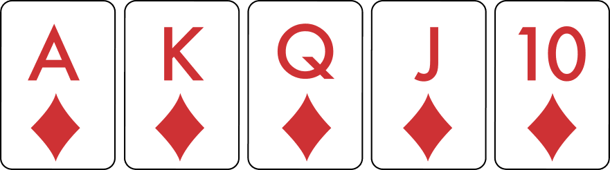
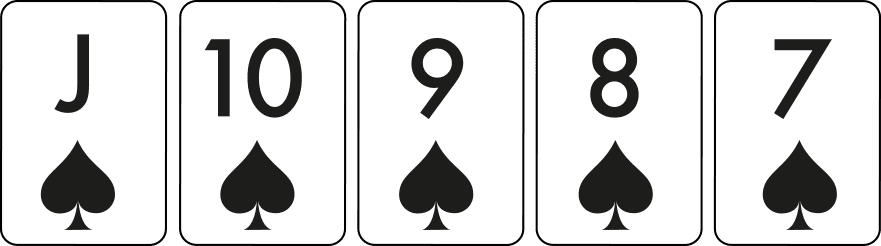
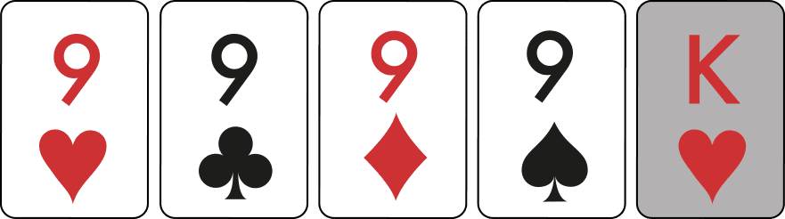
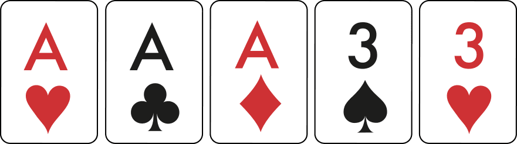
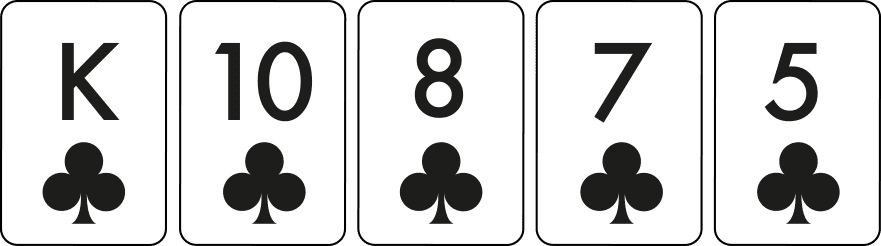
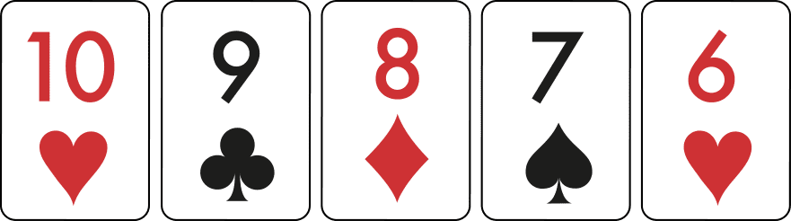
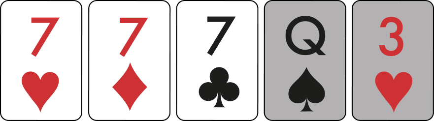
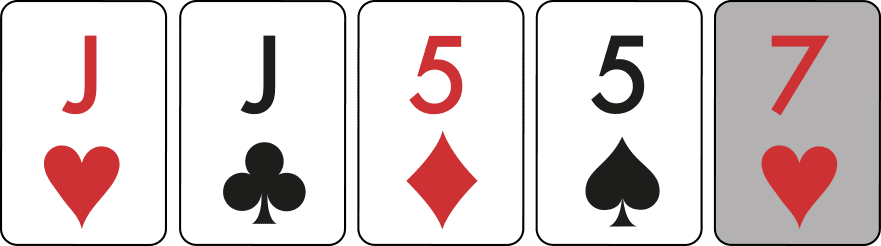
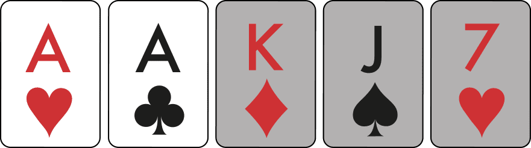
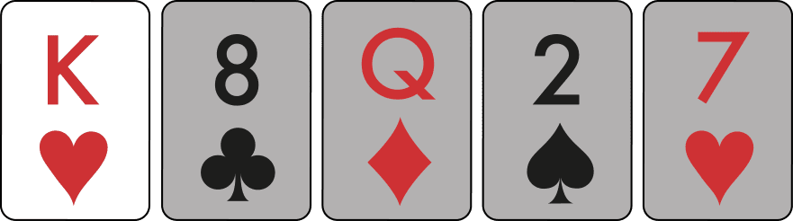

Introduction
Welcome to our beginner's guide to the top-rated poker hands! In poker, the strength of your hand is crucial to your success. Let's learn about the different hand rankings:
Poker Hand Rankings
| Rank | Hand Description | Example |
|---|---|---|
| 1 | Royal Flush |  |
| 2 | Straight Flush |  |
| 3 | Four of a kind |  |
| 4 | Full House |  |
| 5 | Flush |  |
| 6 | Straight |  |
| 7 | Three Of A Kind |  |
| 8 | Two Pair |  |
| 9 | Pair |  |
| 10 | High Card |  |
Description Of Each Card
Royal Flush
A royal flush is the strongest possible five-card hand according to standard poker hand rankings. Making a ten-to-ace straight with all five consecutive cards of the same suit gives you a royal flush. The royal flush is not just the best possible hand; it’s also the rarest of hands, with the odds against making a royal flush in Texas Hold’em at 30,939-to-1. Even if you spend many hours playing poker, you might not ever make a royal flush. The four different suits produce four different possible royal flush combinations for a five-card hand.
Straight Flush
A straight flush makes the second-strongest five-card hand, trailing only the royal flush in the poker hand rankings. A straight flush is made with any five consecutive ranking cards of the same suit. The king-high version represents the strongest possible straight flush, as an ace-high straight flush qualifies as a royal flush. The odds against making a straight flush in Texas Hold’em are 3,589-to-1, making it a very rare holding.
Four Of A Kind
Holding four of the same ranking card (like four aces or four kings) gives you four of a kind. Four of a kind represents one of the strongest hands in poker and only loses to a straight flush or a royal flush. Also known as “quads,” four of a kind doesn’t happen often in a game of poker. You have a 594-to-1 chance of making quads in a game of Texas Hold’em. This hand often plays well as a trapping hand, as your opponents will find it unlikely that you hold quads.
Full House
A full house is made by holding three of the same ranking card with two of another rank. A five-card hand with three aces and two kings, for example, makes a full house. That hand would be known as aces full of kings, or just aces full. Other names for a full house include a “full boat,” or simply a boat.
Flush
A flush is represented by any five cards of the same suit. Unlike the straight and royal flush, the sequence of the cards doesn’t matter, as long as all five cards are the same suit. The highest card of the five determines the strength of the flush. For example, an ace-high flush beats a ten-high flush. A flush is only possible in Texas Hold’em when at least three cards of the same suit hit the board.
Straight
Five consecutive-ranking cards make a straight. For example, putting together 2-3-4-5-6 in a five-card hand gives you a straight. The ten-to-ace straight (T-J-Q-K-A) is also known as a “broadway straight” and is the strongest possible version of a straight. The ace can also be used as the low end of an ace-to-five straight, aka “wheel straight” (A-2-3-4-5).
Three of a Kind
Any hand with three of the same ranking card qualifies as three-of-a-kind. This hand is also known as “trips” or a “set,” but the meaning of these two nicknames differ when applied to Texas Hold’em. A “set” is made when you hold a pocket pair (like a pair of aces) in Texas Hold’em and another of that same cars hits the board. “Trips” refers to holding one of a particular ranking card and seeing two more of that same card come out on the board
Two Pair
Two pair refers to holding two distinct pairs in the same five-card hand. For instance, a hand like A-A-K-K-2 makes two pair, aces, and kings. The higher of the two pair determines the hand’s strength if it’s pitted against another two pair hand. For example, Q-Q-5-5-2 beats J-J-T-T-5 because queens outrank jacks in the order of cards. Two pair makes a strong hand in Texas Hold’em, and is often a hand that can win a big pot.
Pair
Making a pair requires holding two of the same ranking card. Hands like A-A-T-7-5 and J-J-T-7-2 represent pairs in a five-card hand. When two pairs of the same strength play against each other, the winner is determined by the next-highest card (aka the kicker). When your two hole cards in Texas Hold’em make a pair, you hold a “pocket pair.” “Pocket aces,” for example, refers to getting a pair of aces as your hole cards. In a battle of pair versus pair, the highest pair wins.
High Card
Any five-card hand that doesn’t qualify in any of the above categories is known as a high-card hand. Holdings like A-J-8-4-5 (ace-high) and J-8-6-3-2 (jack-high) represent high-card hands. In a battle of highest ranking card hands, the hand with the strongest kicker wins. For instance, the ace-high hand has the highest value and would beat the jack-high hand in this example.